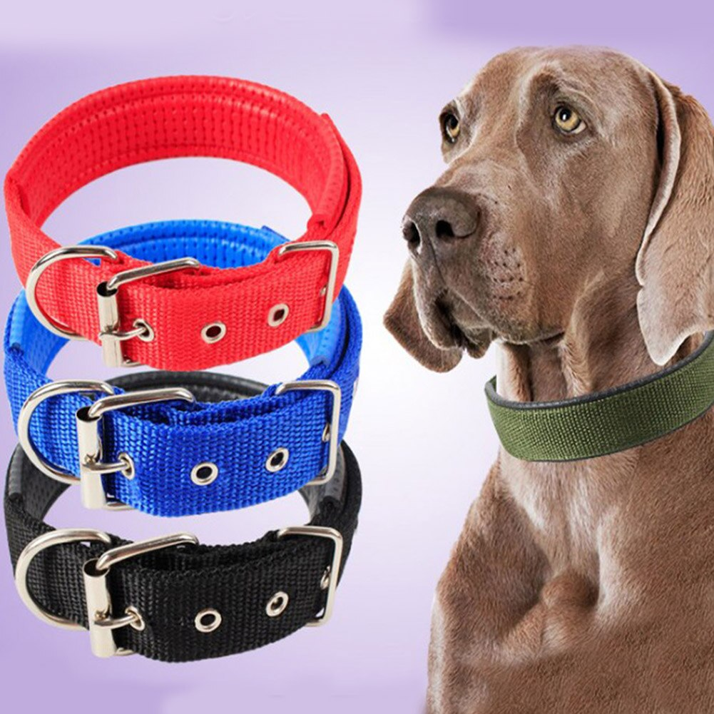

pett shop products
At Pett Shop, we offer a carefully curated selection of high‑quality products designed to keep your pets happy, healthy, and full of life. Whether you care for dogs, cats, birds, fish, or small animals, you’ll find everything you need in one trusted place.
Food
Our pet food is crafted to support your pet’s health, happiness, and vitality at every life stage. Made with high‑quality ingredients and carefully balanced nutrition, our recipes provide essential proteins, vitamins, and minerals to promote strong muscles, healthy digestion, and a shiny coat. Whether you’re feeding a playful puppy, an active adult, or a senior companion, our pet food delivers great taste and wholesome nourishment your pet will love—and you can feel confident serving every day.
Toys

Our pet toys are designed to keep your pets entertained, active, and mentally stimulated. Made from durable, pet‑safe materials, each toy encourages healthy play while helping reduce boredom and support natural instincts like chewing, chasing, and problem‑solving. From playful puppies to curious cats, our toys provide hours of fun, enrichment, and bonding time—because a happy pet is a playful pet.
Collar's and Dog Clothes

Our pet collars and clothing combine comfort, style, and functionality to keep your pet looking and feeling their best. Designed with adjustable fits and soft, pet‑friendly materials, our collars offer security and everyday durability, while our clothing provides warmth, comfort, and a touch of personality. Whether you’re heading out for a walk or dressing your pet for cooler days, our collection ensures both practicality and standout style for pets of all sizes.